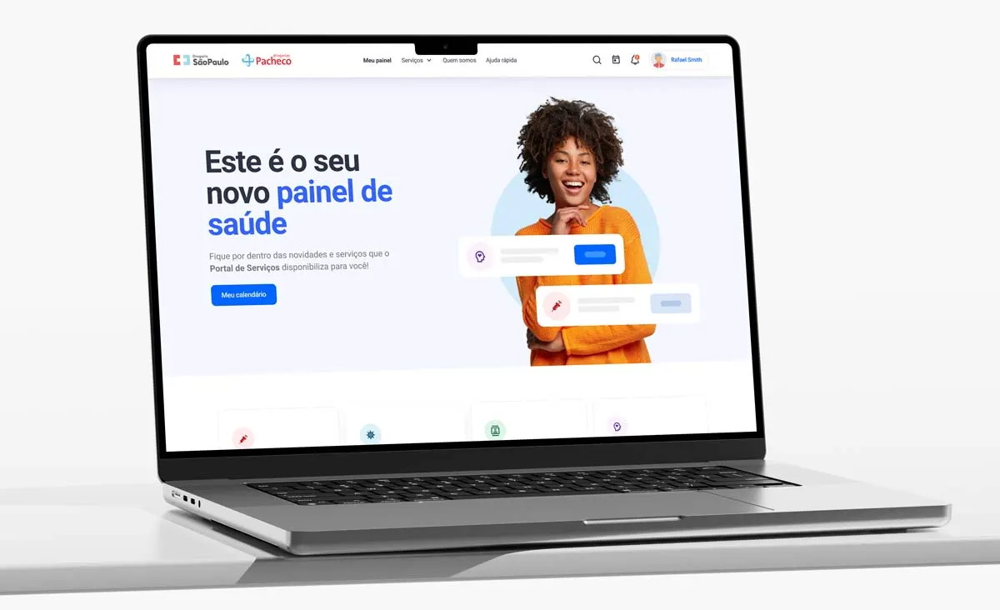
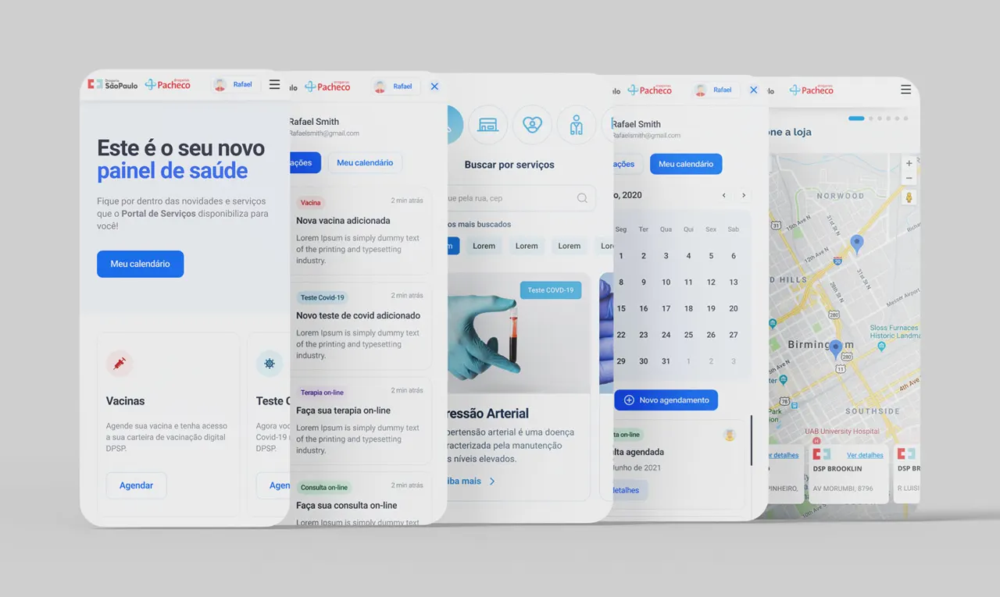

Grupo DPSP
An online scheduling portal for health services, designed during the pandemic for the largest pharmacy chain in Latin America.

Challenge
With Covid-19, DPSP had to launch, in record time, online scheduling for its main services: Covid and blood tests, blood pressure checks and vaccination.
As Lead Designer, the first goal was an MVP built in a single sprint, to validate whether people would use these services digitally at all.

Solution
The MVP was an immediate success and demand grew exponentially, so the group set up a dedicated squad for the platform.
I led the evolution roadmap, coordinating UI and UX designers and front and back-end developers, growing a simple form into a national platform for registering, scheduling and managing health services.

Impact
The portal became a strategic channel for the chain, and a digital habit that outlived the most critical phase of the pandemic.